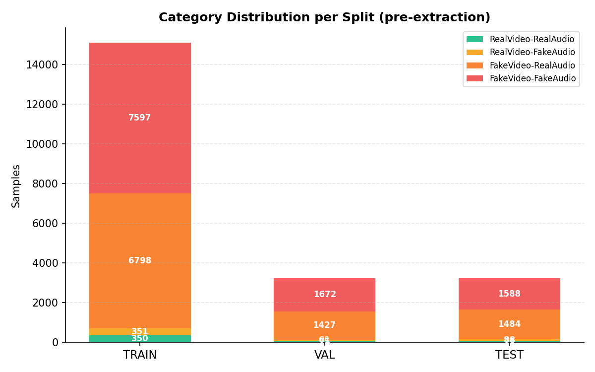
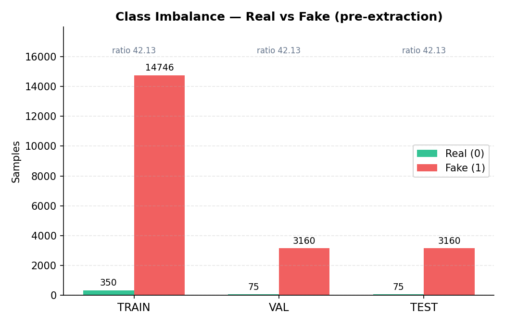
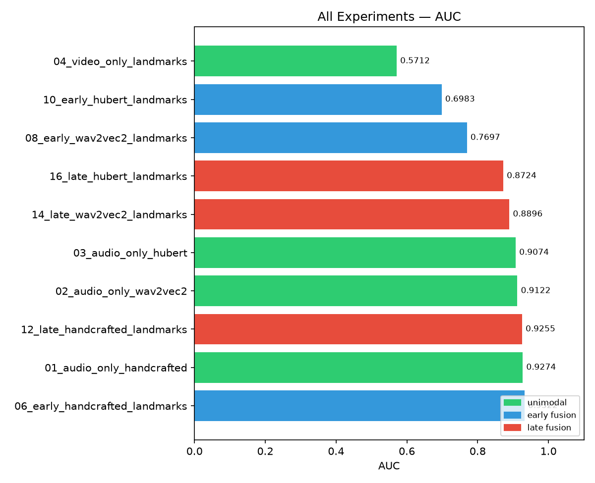
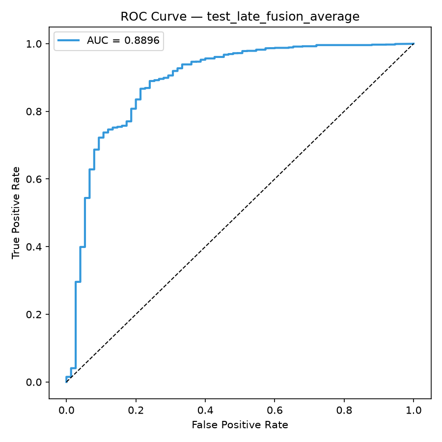
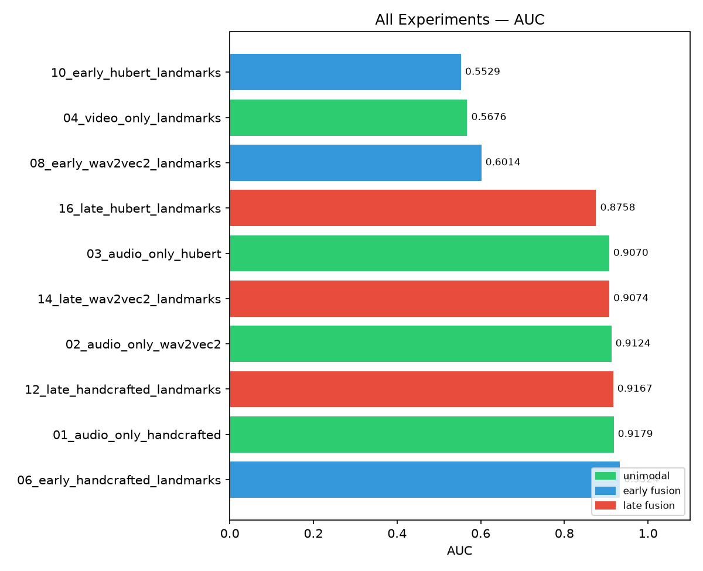
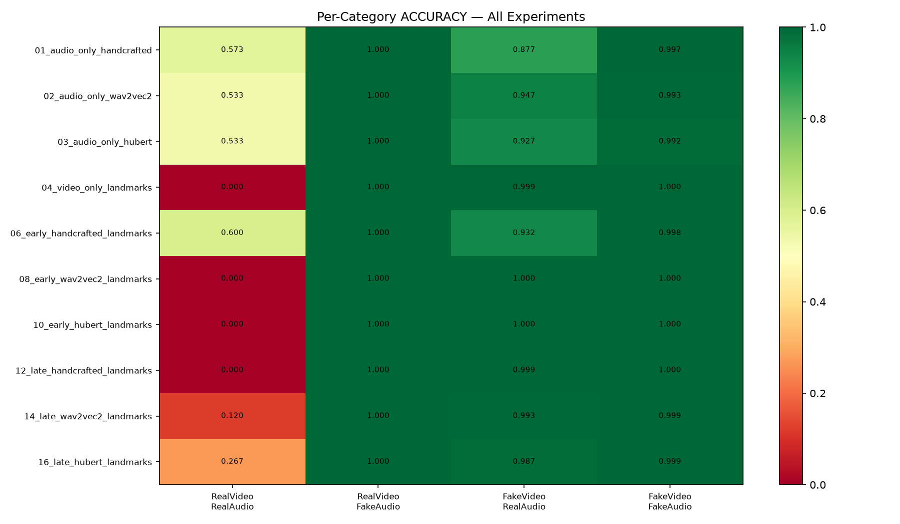
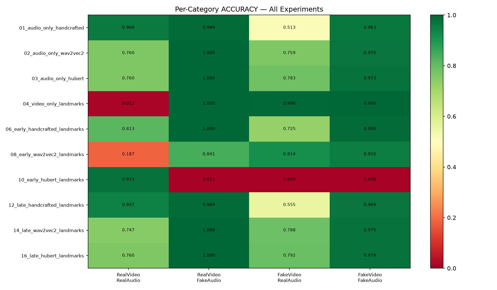
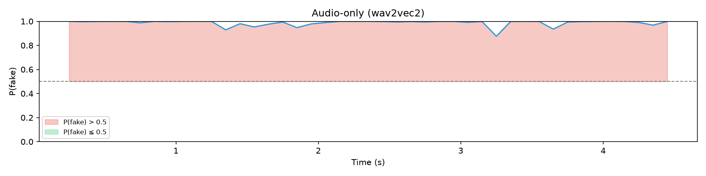
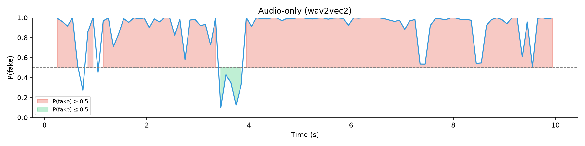
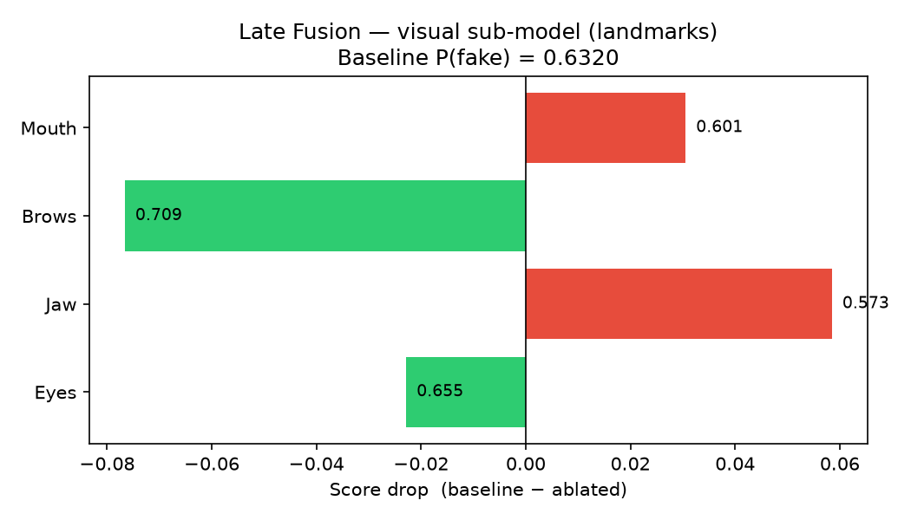

Τα deepfakes είναι συνθετικά βίντεο όπου το πρόσωπο ή/και ο ήχος έχουν τροποποιηθεί με AI. Η ανίχνευσή τους αποτελεί ανοιχτό ερευνητικό πρόβλημα με σημαντικές εφαρμογές στη δημόσια πληροφορία και ψηφιακή ασφάλεια.
Εξετάζουμε τέσσερις κατηγορίες βίντεο:


| Experiment | F1 | AUC |
|---|---|---|
| Video-only (Run 1) | 0.988 | 0.571 |
| Early (HuBERT+LM, Run 1) | 0.988 | 0.698 |
Το F1≈0.988 μοιάζει εξαιρετικό, αλλά ουσιαστικά αντιγράφει την κατανομή του dataset: σχεδόν όλα τα δείγματα είναι fake.
Το AUC μετρά αν το μοντέλο δίνει υψηλότερο score στα fake από ό,τι στα real, ανεξάρτητα από το threshold που θα διαλέξουμε.
| Στρατηγική | Input | Classifier | Experiments |
|---|---|---|---|
| Audio-only | Audio features μόνο | 1 MLP | 3 (HC, w2v, HuBERT) |
| Video-only | Landmarks μόνο | 1 MLP | 1 |
| Early Fusion | concat(audio, visual) → PCA | 1 MLP (κοινό) | 3 |
| Late Fusion | audio + visual ξεχωριστά | 2 MLP → weighted avg | 3 |
extract_audio()MFCC, spectral descriptors, ZCR, RMS και F0. Για κάθε χαρακτηριστικό κρατάμε mean / min / max / std στον χρόνο.
Pretrained facebook/wav2vec2-base. Παίρνουμε το τελευταίο hidden layer και κάνουμε mean pooling.
Pretrained facebook/hubert. Ίδια λογική εξαγωγής: hidden states → mean pooled vector.
.npy ανά βίντεο και συνοδεύονται από manifest CSV, ώστε τα μοντέλα να εκπαιδεύονται χωρίς επανάληψη extraction.
src/features/visual/landmark_features.pyΓια κάθε περιοχή υπολογίζονται στατιστικά θέσης και ταχύτητας στον χρόνο. Αν δεν βρεθούν αρκετά landmarks, επιστρέφεται μηδενικό vector.
Το early fusion ενώνει τα δύο feature vectors πριν τον classifier. Το MLP βλέπει ταυτόχρονα audio και visual πληροφορία και μαθαίνει κοινή απόφαση.
| Combination | PCA |
|---|---|
| HC + landmarks | 731 → 536 |
| wav2vec2/HuBERT + landmarks | passthrough |
| SSL + Xception | 2048 → 768 |
Το late fusion εκπαιδεύει πρώτα δύο ανεξάρτητα unimodal μοντέλα και συνδυάζει τις τελικές πιθανότητες. Δεν κάνει concat features και δεν χρειάζεται PCA.
| Experiment | AUC | EER | F1 | ACC |
|---|---|---|---|---|
| Early HC+LM | 0.9322 | 0.162 | 0.979 | 0.959 |
| Audio HC | 0.9274 | 0.150 | 0.965 | 0.932 |
| Late HC+LM | 0.9255 | 0.157 | 0.988 | 0.977 |
| Audio wav2vec2 | 0.9122 | 0.200 | 0.980 | 0.962 |
| Audio HuBERT | 0.9074 | 0.200 | 0.975 | 0.952 |
| Late wav2vec2+LM | 0.8896 | 0.190 | 0.988 | 0.976 |
| Late HuBERT+LM | 0.8724 | 0.185 | 0.988 | 0.977 |
| Early wav2vec2+LM | 0.7697 | 0.290 | 0.988 | 0.977 |
| Early HuBERT+LM | 0.6983 | 0.399 | 0.988 | 0.977 |
| Video-only LM | 0.5712 | 0.430 | 0.988 | 0.977 |

WeightedRandomSampler υπήρχε ήδη στο Run 1. Στο training στοχεύει περίπου σε 5 fake : 1 real αντί για 42:1. Το test set μένει αμετάβλητο.
Μετά τον sampler, τα fake παραμένουν περισσότερα στο batch. Επειδή fake=positive label, χρησιμοποιούμε pos_weight=0.2 για να μειωθεί η κυριαρχία τους στο loss.
Το Run 1 έδειξε καθαρό AUC gap: audio-only 0.91-0.93, video-only landmarks 0.571. Άρα στο Run 2 δίνουμε μεγαλύτερο βάρος στο audio.

| Experiment | AUC R1 | AUC R2 | ΔAUC |
|---|---|---|---|
| Early HC+LM | 0.9322 | 0.9324 | ≈ 0 |
| Audio HC | 0.9274 | 0.9179 | −0.010 |
| Late HC+LM | 0.9255 | 0.9167 | −0.009 |
| Audio wav2vec2 | 0.9122 | 0.9124 | ≈ 0 |
| Audio HuBERT | 0.9074 | 0.9070 | ≈ 0 |
| Late wav2vec2+LM ★ | 0.8896 | 0.9074 | +0.018 |
| Late HuBERT+LM | 0.8724 | 0.8758 | +0.003 |
| Early wav2vec2+LM | 0.7697 | 0.6014 | −0.168 |
| Early HuBERT+LM | 0.6983 | 0.5529 | −0.145 |
| Video-only LM | 0.5712 | 0.5676 | ≈ 0 |



Sliding window 0.5s, step 0.1s. Κάθε παράθυρο παίρνει ανεξάρτητο P(fake), άρα βλέπουμε πότε ο ήχος γίνεται ύποπτος.
Μηδενίζουμε περιοχές landmarks: Eyes, Jaw, Brows, Mouth. Το score drop δείχνει πόσο βασίστηκε το μοντέλο σε κάθε περιοχή.



| Κύρια ευρήματα | |
|---|---|
| Audio κυριαρχεί | AUC 0.91–0.93. |
| Landmarks ανεπαρκή | AUC≈0.57. |
| Late fusion (w=0.7) | +1.8% AUC vs w=0.5. |
| Early fusion κίνδυνος | Αδύναμα visual features αποσταθεροποιούν την εκπαίδευση. |
| pos_weight = 1/ratio | Ευαίσθητο σε αδύναμα features. |
| AUC | F1/Accuracy παραπλανούν σε 42:1 imbalance. |
Landmarks = γεωμετρία. Deepfakes αφήνουν artifacts στο texture: blurring ορίων, inconsistent skin, rendering artifacts.
Pretrained ImageNet, depthwise separable convolutions → 2048-dim texture embedding ανά frame. Η αρχιτεκτονική που χρησιμοποιείται στη βιβλιογραφία deepfake detection (FaceForensics++).
| Modality | Τώρα | Προβλεπόμενο |
|---|---|---|
| Audio | 0.93 | 0.93 (ίδιο) |
| Video (LM) | 0.57 | — |
| Video (Xception) | — | 0.75–0.85+ |
| Multimodal | 0.907 | >0.93 |
Ευχαριστούμε για την προσοχή σας.